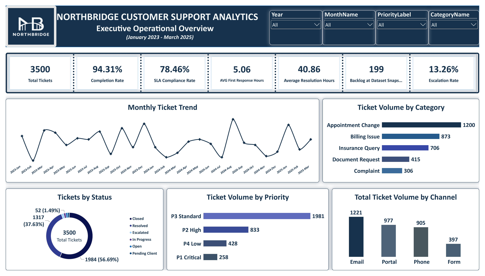
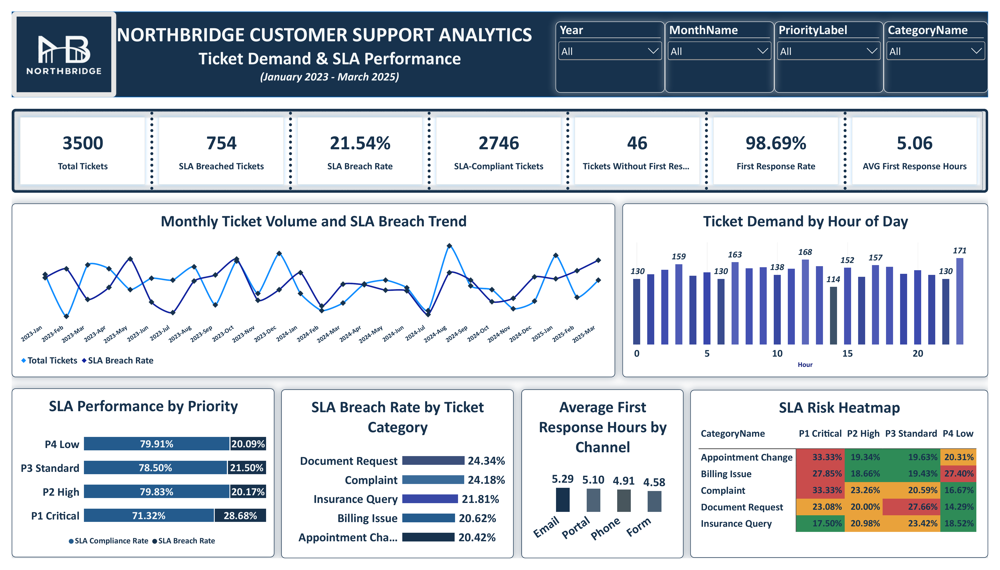
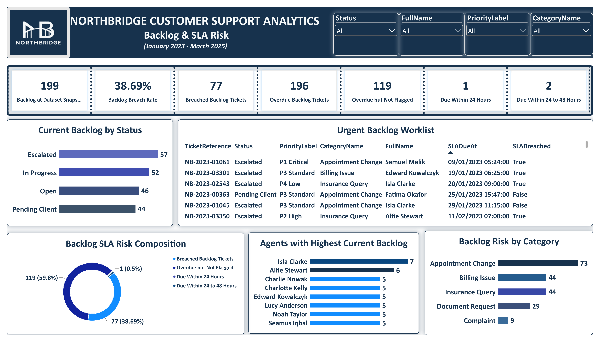
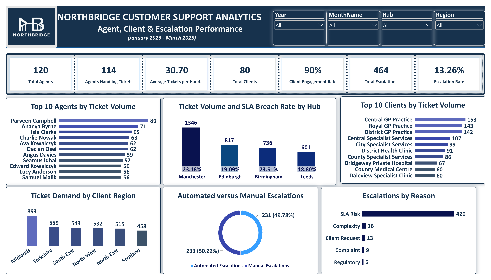
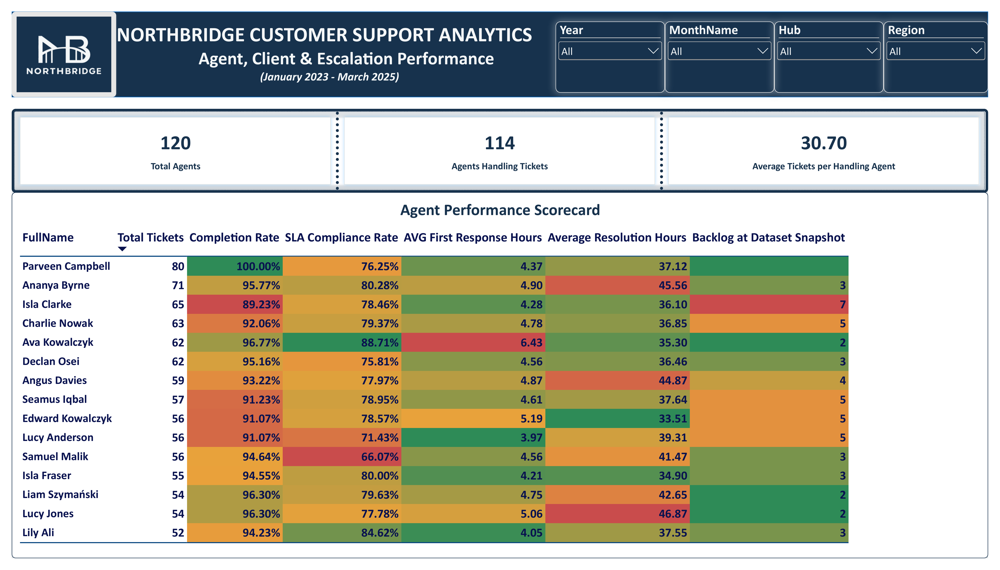

Project Overview
Customer support performance cannot be measured by ticket closures alone. A support operation may resolve most of its cases and still struggle with response delays, missed service commitments, unresolved backlogs and uneven workloads.
This project examines NorthBridge's customer support operations across 3,500 tickets recorded between January 2023 and March 2025. Using SQL Server and Power BI, I analysed ticket demand, SLA compliance, outstanding cases, escalations and agent performance.
Five interactive dashboards were developed to assess where the operation is performing effectively, where service risks remain, and which areas deserve management attention. The objective was to provide a clearer basis for workload planning, service improvement and operational accountability.
01. Executive Operational Overview
This dashboard provides an overall assessment of NorthBridge's support operation, bringing together ticket completion, SLA compliance, response and resolution times, backlog and escalation performance.

Key Business Findings
Across 3,500 tickets, NorthBridge achieved a completion rate of 94.31%, indicating that most recorded cases reached a completed state. However, SLA compliance was lower at 78.46%. This difference is significant: a high closure rate does not automatically mean customers received service within the expected timeframes.
Average first response time was 5.06 hours, while average resolution time was 40.86 hours. These figures establish an operational baseline, but they should be assessed against the SLA targets applicable to each ticket priority rather than treated as uniformly acceptable or unacceptable.
Appointment Change accounted for 1,200 tickets, followed by Billing Issue with 873 and Insurance Query with 706. Together, these categories represent a substantial share of demand. This concentration suggests that improvements to a small number of service processes could influence a large proportion of the overall workload.
Email generated the highest ticket volume at 1,221, followed by Portal at 977, Phone at 905 and Form at 397. These differences are useful for workforce planning, although channel volumes alone do not establish which channel is the most efficient or effective.
Management Considerations
Management should review SLA performance alongside ticket completion, examine recurring demand in the highest-volume categories, and compare response and resolution times against priority-specific service commitments.
02. Ticket Demand & SLA Performance
This dashboard investigates when tickets arrive, how demand changes over time, and where service-level breaches are concentrated across priorities, categories and communication channels.

Key Business Findings
Of the 3,500 tickets analysed, 754 breached their SLA, representing a breach rate of 21.54%. The remaining 2,746 tickets were SLA-compliant. This shows that approximately one in five tickets did not meet its applicable service commitment, despite the high overall completion rate.
The priority-level comparison is particularly important. P1 Critical tickets recorded a breach rate of 28.68%, compared with 20.17% for P2 High, 21.50% for P3 Standard and 20.09% for P4 Low. Although critical cases may have more demanding response and resolution targets, their higher breach rate warrants closer investigation because these tickets carry the greatest operational urgency.
Document Request recorded a 24.34% SLA breach rate, while Complaint recorded 24.18%. These categories should be reviewed to determine whether delays are associated with handoffs, approval requirements, case complexity or workload allocation. The dashboard identifies where to investigate; it does not establish those causes on its own.
The hourly demand chart and monthly ticket trend provide additional context for scheduling and capacity planning. They allow managers to compare demand patterns with service outcomes rather than relying on total ticket counts alone.
The dashboard also records 46 tickets without a first-response timestamp, with a first-response recording rate of 98.69%. These records deserve separate validation, since missing timestamps can affect the reliability of response-time reporting.
Management Considerations
Prioritise a review of critical-ticket breaches, investigate high-breach categories, align staffing with observed demand patterns and strengthen first-response timestamp completeness.
03. Backlog & SLA Risk
This dashboard moves beyond completed tickets to examine cases still requiring attention, their current status, overdue exposure and the agents responsible for outstanding work.

Key Business Findings
At the dataset snapshot, NorthBridge had 199 tickets in its backlog. Of these, 77 had breached their SLA, giving a backlog breach rate of 38.69%. This is materially higher than the overall ticket breach rate of 21.54%, indicating that unresolved work contains a greater concentration of service risk.
The backlog was distributed across 57 escalated tickets, 52 in progress, 46 open and 44 pending client. These statuses require different management responses. Escalated cases may need specialist intervention, while pending-client cases may require structured follow-up rather than additional internal processing alone.
The dashboard identifies 196 overdue backlog tickets, including cases not flagged as SLA-breached. This distinction matters because an overdue indicator and an SLA breach indicator may use different business rules. Their definitions should be reconciled before using them interchangeably in reporting.
Appointment Change contributed 73 backlog tickets, compared with 44 each for Billing Issue and Insurance Query. This suggests that the largest demand category is also a major contributor to outstanding work.
The urgent worklist adds practical value by showing individual tickets, priorities, assigned agents, due dates and breach status. This makes the dashboard useful not only for management reporting but also for daily operational follow-up.
Management Considerations
Introduce a daily risk-based backlog review, prioritising breached and critical cases. Separate internal processing delays from cases awaiting customer action, and validate the rules behind overdue and SLA-breach classifications.
04. Agent, Client & Escalation Performance
This dashboard examines how support demand is distributed across agents, clients, regions and service hubs, alongside the frequency and reasons for ticket escalations.

Key Business Findings
NorthBridge recorded 120 agents, of whom 114 handled tickets. The dashboard reports an average of 30.70 tickets per handling agent. This provides an initial view of workload distribution, but individual volumes should be interpreted alongside case complexity, ticket priority and service outcomes.
The operation served 80 clients and recorded a client engagement rate of 90%. Demand was not distributed evenly across accounts. Central GP Practice generated 153 tickets, followed by Royal GP Practice with 143 and District GP Practice with 142. These accounts warrant attention when planning service capacity and reviewing recurring support needs.
Manchester recorded the highest hub ticket volume at 1,346, followed by Edinburgh with 817, Birmingham with 736 and Leeds with 601. Their respective SLA breach rates were 23.18%, 19.09%, 23.51% and 18.80%. Birmingham's breach rate was slightly higher than Manchester's despite handling fewer tickets. This demonstrates why volume and service quality should be assessed together.
There were 464 escalations, representing 13.26% of all tickets. The split between automated and manual escalations was nearly equal, at 233 and 231 respectively. SLA Risk accounted for 420 escalation reasons, far exceeding the other recorded reasons.
This concentration suggests that escalation activity is heavily associated with protecting or responding to service commitments. Further investigation is needed to distinguish early-warning escalations from cases escalated after service deterioration.
Management Considerations
Review service performance by hub rather than ticket volume alone. Examine the accounts generating the greatest demand, and evaluate whether escalation processes are identifying risks early enough to support timely intervention.
05. Agent Performance Scorecard
The final dashboard provides a more detailed view of individual agent performance by combining workload, ticket completion, SLA compliance, response speed, resolution time and outstanding cases.

Key Business Findings
The scorecard highlights an important distinction between activity and service effectiveness. Parveen Campbell handled 80 tickets and achieved a 100% completion rate, but recorded SLA compliance of 76.25%. This shows why ticket completion alone would provide an incomplete assessment of individual performance.
The dashboard also reveals variation among agents with similar ticket volumes. For example, Ananya Byrne handled 71 tickets with 80.28% SLA compliance, while Isla Clarke handled 65 tickets with 78.46% compliance and a backlog of seven cases.
Response and resolution measures add further context. A faster initial response does not necessarily mean a ticket will be resolved more quickly, and neither measure should be assessed without considering ticket complexity and priority.
The colour-coded scorecard makes differences easier to identify, but the results should be used for coaching and workload review, not automatic judgements about individual capability. Differences in case mix, working hours and assignments should be examined before drawing performance conclusions.
Management Considerations
Use a balanced agent scorecard combining workload, completion, SLA compliance, response times and backlog. Investigate performance differences with appropriate adjustments for ticket complexity and priority, then use the findings to guide coaching and resource allocation.
Overall Business Conclusion
The five dashboards reveal a customer support operation that completes most of its recorded tickets but continues to face challenges in meeting service commitments consistently.
The 94.31% completion rate is encouraging, but the 21.54% SLA breach rate and the higher 38.69% breach rate within the outstanding backlog demonstrate why closure performance must be considered alongside timeliness and unresolved risk.
The analysis also identifies concentrations of demand by ticket category, client and hub, together with differences in individual agent performance. These findings give management a basis for more targeted investigation rather than applying the same response across the entire operation.
Recommended Business Priorities
- Strengthen SLA monitoring, particularly for critical tickets and high-breach categories.
- Establish a daily backlog review focused on overdue, breached and escalated cases.
- Review recurring demand in Appointment Change, Billing Issue and Insurance Query.
- Compare hub and agent performance using service outcomes alongside ticket volumes.
- Improve timestamp completeness and reconcile reporting rules for overdue cases and SLA breaches.
The purpose of this analysis is to support better operational decisions: identifying where service standards are slipping, where resources may need to be redirected and where process improvements deserve further investigation.